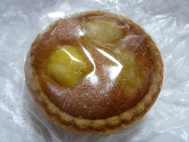
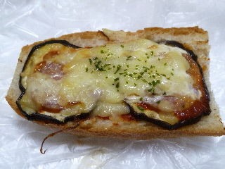
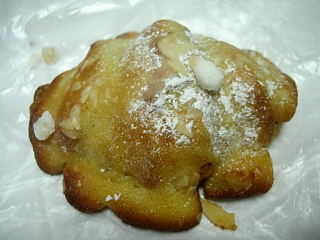
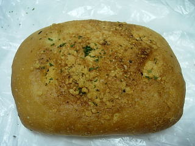
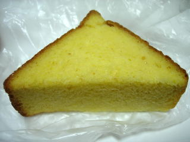

パサージュの栗のタルト
更新日 : 2014/01/05
パン屋さんですけど、とっとも綺麗でおいしそうなタルトを見つけました。

カラコロ工房にあるパサージュのものです。
タルトの中はパウンドケーキみたいで甘くて美味しかったです。
違う種類のタルトもあったので、今度はそっちも食べてみたいです。
島根県松江市殿町43カラコロ工房内
更新日 : 2014/01/05
パン屋さんですけど、とっとも綺麗でおいしそうなタルトを見つけました。

カラコロ工房にあるパサージュのものです。
タルトの中はパウンドケーキみたいで甘くて美味しかったです。
違う種類のタルトもあったので、今度はそっちも食べてみたいです。
更新日 : 2011/08/22
フランスパンのピザパンです。おつまみ系な感じがしますね。

最近はパン屋さんで普通のピザのカットされたものが売ってたりして、このタイプって少なくなった気がします。
その場ですぐに食べるならピザでもいいですが、ビニール袋にいれて持って帰って食べるなら、こっちのカッチリ固いフランスパンのピザの方が食べやすくていいかなと思いました。
更新日 : 2010/02/14
アーモンドがたっぷり掛かっていて、クロワッサンの原型がわからないですね。

アーモンと砂糖味がしっかりと有り、甘い洋菓子風のパンでした。
サクサクとしたお菓子で美味しかったです。クッキーみたいな感じですね。
これはミニですが、フルサイズの商品も販売していました。

こっちはお惣菜パンで、ベーコンと玉葱のフォカッチャです。
味付けは濃くないんですが、端から端までキッチリベーコンと玉葱が入っていたので、具材の味がしっかりしました。いい惣菜パンですね。
更新日 : 2009/12/23
カラコロ工房にあるパン屋さんのフレンチトーストです。

綺麗な黄色に染まっているので、沢山味がしみこんでてそうですが、案外ドライでした。
厚切りで、ちょっと固めのパンが個性的でいいですね。べとつかないので手で持って食べやすかったです。なんか新食感で、新しいお菓子みたいな気分がしました。
甘さ控えめで、パンの味がよくしました。